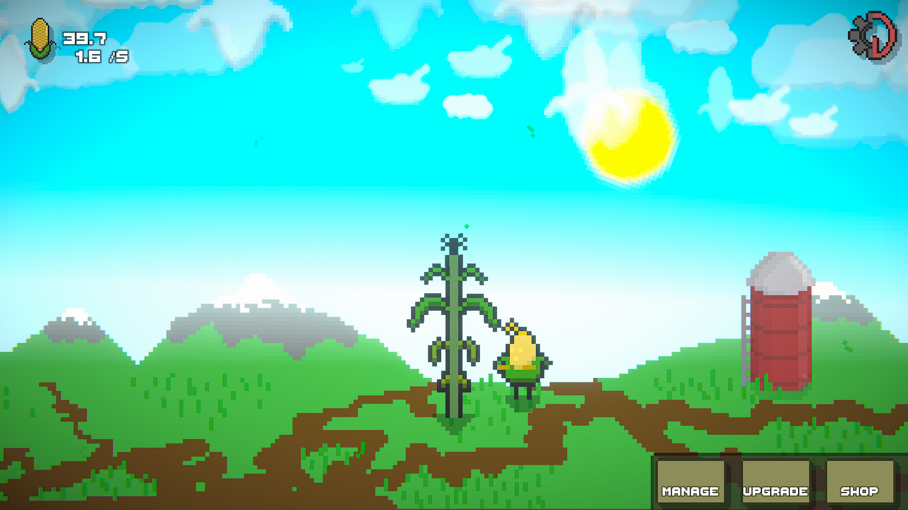
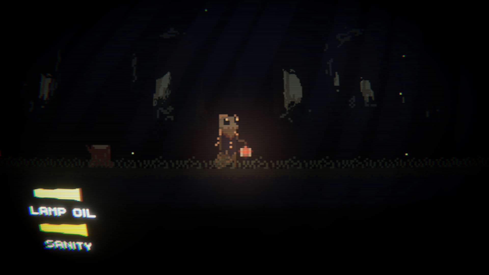
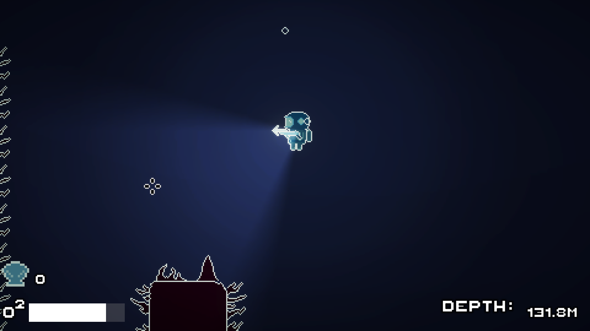
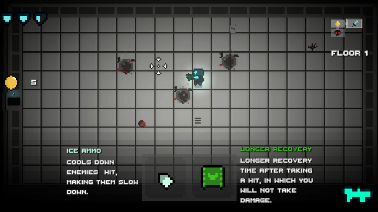

My Work
A collection of published games — ordered from most to least recent. Every one of these taught me something new.
A short narrative game about a first date — with a twist. Instead of choosing dialogue directly, your responses are decided through a minesweeper-style interaction. Clear the board and Sam finds the right words. Hit a mine, and things come out… differently.

A simple idle clicker that started as a 4-hour challenge and turned into 30+ hours of work. Born from a late-night impulse — sat down at 8pm, wanted it done by midnight. Months later, still going.

A game jam entry built with a single-input constraint. Ambitious vision, tough limitations — and a year out of game dev didn't help. Still got featured in a YouTuber's video, which was awesome.

My first ever game jam — theme: "diving deeper." It was well-received by players, and great first exposure to community feedback. Placed ~400th out of 1,000+ entries.

The first game I finished and felt proud of. Not a masterpiece — but a genuine step forward. Serviceable, polished enough, and a proof of concept that I could actually ship something real.
Pulled from itch.io, project files deleted. These two games are now lost media — but they were part of the journey that led here. That's just the process.